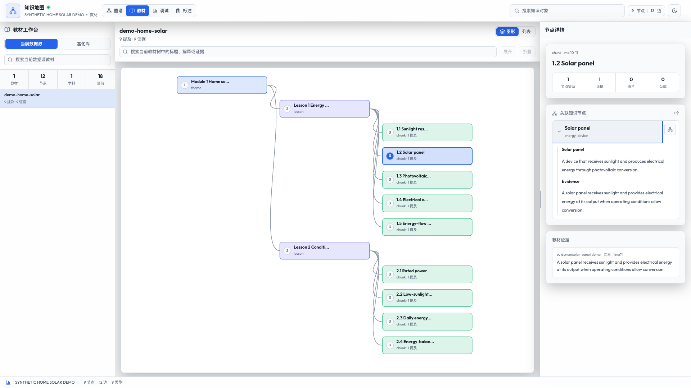
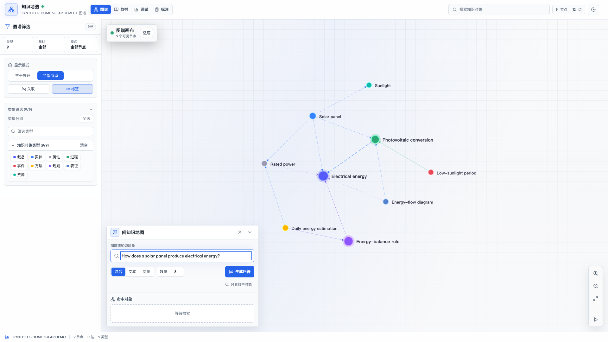

知识没有稳定身份
同一概念散落在多个页面中，难以持续维护、连接和复用。
Open Knowledge Map 按课时处理教材，把知识对象、关系、来源证据、知识正文与教学画像组织成统一知识网络，让检索、生成和人工复核围绕同一份完整知识单元工作。
界面使用仓库原创太阳能样例，不展示第三方教材内容。
当前成果快照
版本化的只读成果用于检查结构、证据链和界面，不代表准确率或教学效果。
为什么做
页面和文本片段适合临时检索，却缺少稳定身份、明确关系、来源证据和复核状态。Open Knowledge Map 把教材视为知识的证据来源，而不是知识最终的计算形态。
同一概念散落在多个页面中，难以持续维护、连接和复用。
只有切块文本，软件无法稳定判断定义、关系和证据来自哪里。
检索、生成和人工检查各拿一份数据，容易出现口径不一致。
统一组织定义、关系、证据、正文、画像和审核状态，让同一对象能够被检索、查看和调用。
怎样工作
按课时隔离处理，在归并阶段形成正式知识库，再经过质量检查对外提供完整知识单元。
课时处理器只写暂存区；正式知识库写入、重复项处理和最终质量状态只由归并与规范化步骤负责。
系统能力
不是把节点画出来就结束，而是让每个知识对象都能回到来源、进入检索，并接受人工检查。
教材树、课时切块、对象提及和原始证据保持关联，便于检查对象为什么存在、定义来自哪里。

统一聚合定义、关系、证据、提及、卡片、知识正文、领域画像和完整度信息。
支持文本、向量与混合检索，并在生成结果中校验引用编号是否属于当前检索上下文。

引用编号归属校验不等同于语义蕴含证明。
ai-nks-v0.1
定义知识对象、知识单元、知识网络、运行时和治理边界。
world-v1.2
约束当前数据表、结构模式、节点类型、关系类型和证据规则。
ApiUnit
为查看器、检索和带依据生成提供统一的完整知识对象视图。
研究边界